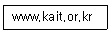
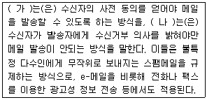
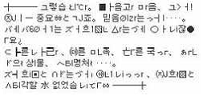
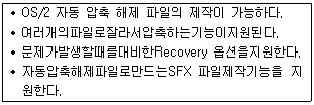
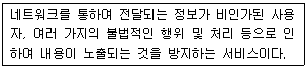
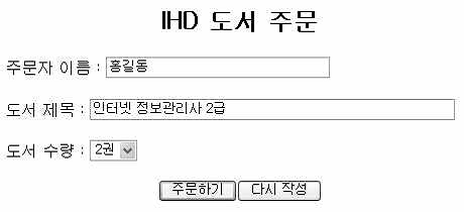
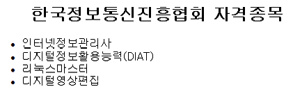
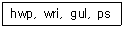
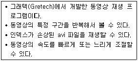
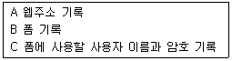

인터넷정보관리사-2급 (2012-09-08 기출문제)
1과목: 인터넷의 이해
1. 인터넷에 대한 설명으로 옳지 않은 것은?
- TCP/IP 프로토콜을 이용한다.
- 클라이언트/서버 시스템을 기반으로 한다.
- NSFNET에서 인터넷을 통제하고 관리한다.
- 시간과 공간의 제약없이 원하는 정보를 제공 받을 수 있다.
(정답률: 92%)

2. 국내ㆍ외 인터넷 역사에 대한 설명으로 옳지 않은 것은?
- 1969년 : 미 국방성의 ARPANet 탄생
- 1982년 : 서울대학교와 KIET(전자통신연구소)간의 SDN(System Development Network) 구축
- 1986년 : DNS(Domain Name System) 개념 도입
- 1987년 : KREONet(연구망)과 KREN(교육망) 구축
(정답률: 42%)
3. 국외 인터넷 관련 기구인 W3C에서 담당하는 업무는?
- 인터넷과 관련된 기술 분야를 담당한다.
- TCP/IP와 같은 인터넷 관련 프로토콜의 표준안을 제정한다.
- RFC와 Internet Draft 문서를 제작하고 출판 업무를 담당한다.
- WWW와 관련된 표준안을 제작하고 새로운 표준안을 제안한다.
(정답률: 60%)
4. 인터넷 관련 문서 중 컴퓨터 통신 및 인터넷과 관련된 상세한 절차와 표준 규격을 제시하는 IAB의 공문서 간행물은?
- RFC
- FYI
- FAQ
- IRG
(정답률: 70%)
5. 다음은 한국정보통신진흥협회의 도메인을 나타낸 것이다. 기관의 성격을 나타내는 것은?

- www
- kait
- or
- kr
(정답률: 76%)
6. 최상위 도메인에 대한 설명으로 옳지 않은 것은?
- int : 미국 정부기관
- com : 일반 영리기관
- org : 일반 비영리기관
- edu : 교육기관
(정답률: 64%)
7. nTLD(국가별 최상위 도메인)으로 바르게 연결된 것은?
- 프랑스 : fs
- 독일 : dd
- 호주 : au
- 중국 : ch
(정답률: 73%)
8. IP 클래스 중 C 클래스에 대한 설명으로 옳은 것은?
- 멀티캐스트용 IP 주소이다.
- 128.0.0.0이 해당된다.
- 국가나 대형 통신망에서 사용한다.
- 소규모 회사나 ISP 업체에서 사용한다.
(정답률: 69%)
9. IPv6 주소에 대한 설명으로 옳지 않은 것은?
- IPv4와 함께 동작할 수 있다.
- 16Bit씩 8개 부분으로 나눈다.
- 각 부분은 세미콜론(;)으로 구분한다.
- 128Bit 주소 체계의 인터넷 프로토콜이다.
(정답률: 71%)
10. 전자우편에서 수신자가 이용자의 아이디를 수신 거부로 설정했을 때 나타나는 에러 메시지는?
- User Unknown
- Sender blocked
- Connection Refused
- Network Unreachable
(정답률: 50%)
11. 리스트 네임이 ‘IT-academy’인 메일링 리스트에 ‘news@ihd.or.kr’이란 메일 주소를 가입하는 명령어로 올바르게 기술한 것은?
- lists news@ihd.or.kr IT-academy
- subscribe IT-academy news@ihd.or.kr
- subscribe news@ihd.or.kr IT-academy
- unsubscribe IT-academy news@ihd.or.kr
(정답률: 53%)
12. 웹 브라우저를 이용한 FTP 서비스에 대한 설명으로 옳지 않은 것은?
- 원하는 파일을 다운로드 할 수 있다.
- 별도의 FTP 전용 프로그램을 설치할 필요가 없다.
- Anonymous FTP 서버에 접속하기 위해 ID와 Password를 입력해야 한다.
- URL에 ‘ftp://사용자 ID:Password@ftp.호스트이름:포트번호’ 형식으로 입력하여 접속한다.
(정답률: 61%)
13. FTP 명령어에 대한 설명으로 옳은 것은?
- pwd : 원격 컴퓨터의 패스워드를 변경
- mget : 여러 개의 파일을 원격 컴퓨터로 업로드
- cd : 원격 컴퓨터의 파일 및 디렉토리의 목록을 표시
- hash : 업로드나 다운로드 시 파일 전송 현황을 ‘#’으로 표시
(정답률: 47%)
14. 유즈넷 뉴스그룹에 글을 올리거나 관리하기 위한 프로토콜은?
- SMTP
- POP3
- NNTP
- IMAP
(정답률: 54%)
15. 유즈넷의 대표적인 모그룹의 주제에 대한 설명으로 옳지 않은 것은?
- rec : 예술, 오락, 여가 등
- comp : 비즈니스, 상품, 서비스 등
- soc : 사회과학, 문화, 역사 등
- talk : 정치, 종교 등
(정답률: 37%)
16. 다음 중 나머지 셋과 성격이 다른 프로그램은?
- mIRC
- ICQ
- GPL
- MSN Messenger
(정답률: 23%)
17. 채널 안에서 대화를 나눌 때 표준 키보드의 아스키(ASCII) 문자를 이용하여 자신의 감정이나 얼굴 표정을 간단하게 표현하는 것을 무엇이라고 하는가?
- 아바타
- TTS
- 두문자어
- 스마일리
(정답률: 60%)
18. 현재의 고객과 잠재된 고객에 대한 정보를 분석하여 수익을 창출할 수 있는 정보로 변환함으로써 마케팅 프로그램을 개발ㆍ실현ㆍ수정하는 고객 중심의 경영 기법은 무엇인가?
- CALS
- EDI
- CRM
- SOHO
(정답률: 57%)
19. 전자상거래의 일반적인 특징이 아닌 것은?
- 유통 채널의 복잡화
- 개인정보 노출 우려
- 중간 유통 단계의 최소화
- 시간과 공간의 제약 극복
(정답률: 77%)
20. 개인정보 보호법에 근거한 개인정보에 해당되지 않는 것은?
- 성명
- 주민등록번호
- 영상 등을 통하여 개인을 알아볼 수 있는 정보
- 통계작성의 목적을 위해 특정 개인을 식별 할 수 없는 정보
(정답률: 64%)
21. 저작재산권의 제한에 해당되는 경우가 아닌 것은?
- 재판절차 등에서의 복제
- 도서관 등에서의 복제
- 공표된 저작물의 인용
- 영리 목적의 복제
(정답률: 32%)
22. 다음 중 저작권법에 의해 보호받는 저작물에 해당하는 것은?
- 조약, 명령
- 법원의 판결, 결정
- 지도, 도표, 설계도
- 사실을 전달하는 시사보도
(정답률: 74%)
23. 업무상저작물의 저작재산권은 공표한 날로부터 몇 년간 보호되는가?
- 5년
- 20년
- 50년
- 70년
(정답률: 54%)
24. 네티켓에 대한 설명으로 옳지 않은 것은?
- 인터넷에서 지켜야하는 일반적인 예절이다.
- ‘네티즌(Netizen)’과 ‘에티켓(Etiqutte)’의 합성어이다.
- 인터넷은 가상공간이므로 별도의 규범과 약속은 필요하지 않다.
- 인터넷 문화를 정착시키기 위하여 네티켓을 지키는 것이 바람직하다.
(정답률: 75%)
25. 다음은 커뮤니티 관련 네티켓을 나타낸 것이다. ( ) 안에 들어갈 단어를 순서대로 나열한 것은?

- 옵트인(Opt-in) 옵트아웃(Opt-out)
- 옵트아웃(Opt-out) 옵트인(Opt-in)
- 인터넷 실명제 옵트아웃(Opt-out)
- 옵트인(Opt-in) 인터넷 실명제
(정답률: 78%)
26. 그림은 어떤 인터넷 게시판에 등록된 글의 일부를 나타낸 것이다. 이와 같은 상황에 필요한 네티켓은?

- 정확하고 어법에 맞는 언어를 사용해야 한다.
- 불필요한 접속을 삼가하여 서버의 부하를 줄인다.
- 파일을 송ㆍ수신할 때는 업무시간을 피해서 한다.
- 용량이 큰 파일은 압축하여 첨부시키고 바이러스 감염 여부를 반드시 확인한다.
(정답률: 79%)
27. 임의의 좌표를 판독하여 데이터를 컴퓨터로 입력하는 장치는?
- 터치패드
- 라이트 펜
- 디지타이저
- 조이스틱
(정답률: 50%)
28. 운영체제의 평가 기준에 해당되지 않는 것은?
- 처리 능력
- 반환 시간
- 신뢰도
- 타당도
(정답률: 68%)
29. 다음에서 설명하는 압축 프로그램은?

- ALZIP
- 빵집
- WinZIP
- WinRAR
(정답률: 45%)
30. 전체적인 내용은 동일하고 일부분만 다른 문서의 데이터 파일을 결합하여 여러 개의 문서로 만드는 기능을 무엇이라고 하는가?
- 매크로
- 메일머지
- 색인
- 미주
(정답률: 45%)
31. LAN 환경에서 전용선을 이용한 인터넷 연결 시 네트워크 설정에서 지정하지 않아도 되는 항목은?
- IP 주소
- 게이트웨이
- DNS
- SLIP
(정답률: 49%)
32. 전용 회선의 종류에 따른 전송 속도를 바르게 비교한 것은?
- E1 < T1 < T2 < T3
- E1 < T1 < T3 < T2
- T1 < E1 < T2 < T3
- T1 < E1 < T3 < T2
(정답률: 65%)
33. 네트워크 관련 장비에 대한 설명으로 옳지 않은 것은?
- 허브 : 네트워크에서 각 단말기를 연결시키는 집선 장치
- DSU : 디지털 데이터를 디지털 신호로 변환 해주는 장치
- 브리지 : 두 개의 LAN 시스템을 연결하는데 사용되는 고속의 스위칭 장치
- 라우터 : 네트워크나 다른 구조 시스템을 서로 연결시켜주는 컴퓨터 시스템 및 소프트웨어
(정답률: 47%)
2과목: 인터넷 자원 탐색
34. 일정 지역의 단말기까지는 하나의 회선으로 연결되고 이후 해당 단말기에 다수의 단말기가 연결되어 있는 형태로 분산 처리에 사용되는 네트워크의 형태는?
- 성(Star)형
- 트리(Tree)형
- 링(Ring)형
- 망(Mesh)형
(정답률: 50%)
35. VDSL에 대한 설명으로 옳지 않은 것은?
- 지역별 사용자가 증가하여도 속도는 일정하다.
- 업로드 속도는 1.6~6.4Mbps의 속도를 지원한다.
- 초당 10MB 이상으로 데이터를 변ㆍ복조하는 방식이다.
- VOD, 멀티미디어, 원격 교육 등의 대용량 데이터 처리에 적합하다.
(정답률: 43%)
36. 다음에서 설명하는 웹 보안 요소는?

- 인증
- 비밀 보장
- 데이터 무결성
- 부인 봉쇄
(정답률: 39%)
37. 사용자가 서버에 접근 금지된 자원을 요구할 때 요청한 자료에 대한 권한이 없으므로 접근 금지 되었음을 사용자에게 알리기 위해 서버에서 전송하는 에러 코드는?
- 403 Forbidden
- 404 Not Found
- 500 Internal Server Error
- 503 Service Unavailable
(정답률: 46%)
38. 잘 알려진 포트(Well-Known Port) 번호란 TCP와 UDP의 응용 프로세서를 식별하기 위해 정해 놓은 16비트의 숫자를 나타낸다. 다음 중 프로토콜별 잘 알려진 포트 번호로 올바르지 않은 것은?
- FTP : 21
- SMTP : 25
- NNTP : 70
- HTTP : 80
(정답률: 50%)
39. 프로토콜에 따른 URL 표기 형식이 올바르지 않은 것은?
- http://
- telnet://
- mailto:
- news:\\
(정답률: 62%)
40. 그래픽 기반의 홈페이지 저작도구가 아닌 것은?
- 플래시(Flash)
- 핫도그(Hotdog)
- 드림위버(Dreamweaver)
- 프론트 페이지(Front Page)
(정답률: 61%)
41. HTML 문서에 대한 설명으로 옳지 않은 것은?
- HTML의 태그는 대ㆍ소문자 구분이 없다.
- 속성과 속성의 구분은 공백으로 구분한다.
- 모든 태그는 시작과 종료 태그로 구성되어 있다.
- 공백이나 저작권 표시와 같은 몇 가지 기호들은 특수기호를 사용해야 한다.
(정답률: 50%)
42. 다음은 도서 주문과 관련한 HTML 문서의 일부를 나타낸 것이다. 사용되지 않은 태그는?

- <input>
- <select>
- <center>
- <textarea>
(정답률: 40%)
43. 그림은 이미지 태그를 사용한 HTML 문서의 일부를 나타낸 것이다. 그림과 같이 마우스를 이미지 위에 가져 갔을 때 풍선 도움말이 나타나도록 하는 속성은?
- src
- alt
- width
- border
(정답률: 43%)
44. 다음은 순서 없는 리스트 태그를 사용하여 목록을 작성한 것이다. 이 태그에서 사용한 속성은?

- disk
- circle
- square
- rectangle
(정답률: 33%)
45. 텍스트나 이미지를 비트맵 형태로 입력하는 장치는?
- 조이스틱
- 스캐너
- 터치패드
- 디렉터
(정답률: 52%)
46. 다음 파일의 확장자가 지니는 공통점은?

- 동영상
- 이미지
- 오디오
- 텍스트
(정답률: 78%)
47. 웹 브라우저에서 별도의 프로그램 설치 없이 자체적으로 지원하는 이미지 파일 형식은?
- ai
- cdr
- png
- psd
(정답률: 70%)
48. 인접하는 색상이나 흑백의 점들을 혼합하여 중간 색조를 만들어 윤곽을 부드럽게 만드는 기법을 나타내는 멀티미디어 용어는?
- 디더링(Dithering)
- 메조틴트(Mezzotint)
- 모델링(Modeling)
- 렌더링(Rendering)
(정답률: 49%)
49. 웹 브라우저가 자체적으로 실행하지 못하는 파일 형식들을 지원하기 위해서 자동으로 설치되어 브라우저의 기능을 확장해 주는 프로그램을 무엇이라고 하는가?
- 번들
- 미들웨어
- 플러그인
- 스트리밍
(정답률: 73%)
50. 1995년 처음으로 공개된 이후 전세계에서 이용되고 있는 미디어 플레이어로 동영상 및 음악 재생 뿐만이 아니라 인터넷 동영상을 원클릭으로 다운로드한 후 아이폰 포맷으로 변환하여 아이튠스로 전송하거나 나만의 동영상을 유튜브에 업로드 할 수 있도록 지원하는 프로그램은?
- QuickTime
- RealPlayer
- Adobe Flash Player
- Windows Media Player
(정답률: 42%)
51. 다음에서 설명하는 프로그램은?

- RealPlayer
- VDOLive
- ShockWave Flash
- GOM Player
(정답률: 60%)
52. SGI사에서 만든 플러그인 프로그램으로 웹상에서 VRML로 만든 가상 공간을 경험할 수 있도록 도와주는 프로그램은?
- RealPlayer
- QuickTime
- Cosmo Player
- Winamp
(정답률: 49%)
53. 웹브라우저의 종류에서 1989년 캔사스 대학의 Lou Montulli가 유닉스VMS 운영체제 사용자들을 위해 개발한 텍스트 기반의 브라우저로 옳은 것은?
- Samba
- Lynx
- Arachne
- Mosaic
(정답률: 53%)
54. 브라우저 유형이 윈도우즈 환경이면서 그래픽 기반 브라우저인 것으로 옳은 것은?
- Arachne
- HotJava
- Lynx
- Samba
(정답률: 46%)
55. 다음 중 웹브라우저가 아닌 것은?
- Naver
- Hotjava
- Chrome
- Internet Explorer
(정답률: 54%)
56. 인터넷 익스플로러의 특징에 대한 설명으로 적합하지 않은 것은?
- 입력했었던 URL 목록을 주소 표시줄에 보여준다.
- 최근 열어본 페이지의 목록 보기 기능을 지원한다.
- 주소표시줄에서 인터넷 한글 키워드 시스템이 지원된다.
- 무선인터넷 광대역 접속기술로 대용량의 멀티미디어 정보를 주고받을 수 있다.
(정답률: 69%)
57. 인터넷 익스플로러의 파일 메뉴에 있는 내용이 아닌 것은?
- 페이지 설정
- 인쇄
- 인터넷 옵션
- 열기
(정답률: 66%)
58. 인터넷 익스플로러에서 사용자 컴퓨터나 파일을 손상시킬 수도 있는 웹사이트를 제한하기 위한 영역 설정은 인터넷 옵션의 어느 부분 탭인가?
- 일반
- 보안
- 개인정보
- 내용
(정답률: 75%)
59. 인터넷 익스플로러에서 링크에 항상 밑줄을 표시하기 위한 인터넷 옵션의 메뉴는?
- 개인정보
- 내용
- 프로그램
- 고급
(정답률: 42%)
60. 인터넷 익스플로러에서 인터넷을 검색하고 “종료할 때 검색 기록 삭제”를 하기 위한 인터넷 옵션의 메뉴는?
- 일반
- 보안
- 내용
- 연결
(정답률: 47%)
61. 다음 보기 중에서 인터넷 익스플로러 자동완성 기록 지우기에 해당되는 것을 모두 고르시오

- A
- A, B
- A, C
- A, B, C
(정답률: 56%)
62. 인터넷 검색엔진을 통해 검색할 수 있는 분야로 보기에 가장 어려운 것은 무엇인가?
- 국내 일간지의 뉴스 기사
- 블로그나 카페의 게시판에 등록된 내용
- 인터넷 사용자의 이메일 본문 내용
- 유즈넷 뉴스그룹에 등록된 내용
(정답률: 73%)
63. 검색 엔진을 구축하여 서비스를 제공하기 위한 구성요소가 아닌 것은?
- Robot
- Indexer
- 검색엔진 Software
- 검색엔진 Hardware
(정답률: 58%)
64. 인터넷 상에 있는 웹사이트나 뉴스그룹을 주기적으로 돌아다니며 자동으로 정보를 수집해 와서 이 자료들을 자체적으로 정리하여 웹 서버에방대한 자원을 가진 데이터베이스를 구축하게 하는 프로그램을 무엇이라 하는가?
- 로봇
- 색인기
- 유즈넷
- 메일링 리스트
(정답률: 48%)
65. 로봇의 주요 기능이 아닌 것은?
- 자료의 수집
- 색인화 하기
- HTML 태그를 체크하기
- 전자게시판으로 특정 주제나 관심사의 의견 게시
(정답률: 65%)
66. 로봇이 웹에 미치는 악영향에 대한 설명으로 옳지 않은 것은?
- 네트워크를 돌아다니며 트래픽을 발생시킬 수 있으며, 이로 인해 속도가 느려지게 한다.
- 웹서버가 아닌 PC나 MAC을 서버로 사용하는 사이트는 로봇으로 인해 시스템이 다운되기도 한다.
- 로봇으로 인해 가장 많은 피해를 보는 것은 일반적으로 CGI 프로그래밍 소스이다.
- 유즈넷이나 메일링 리스트의 URL을 감시한다.
(정답률: 42%)
3과목: 인터넷 윤리
67. 검색 엔진에서 제공하는 검색 결과의 방식과 가장 거리가 먼 것은?
- 디렉토리
- 카테고리
- 사이트
- 게시판
(정답률: 53%)
68. 바람직한 정보검색 방법으로 가장 적절하지 못한 것은?
- 여러 검색엔진을 사용해서 비교해 본다.
- 가능하면 키워드는 구체적으로 입력한다.
- 각 검색엔진별 도움말을 참고한다.
- 검색 연산자는 절대 사용하지 않는다.
(정답률: 73%)
69. 검색방식에 의한 검색 엔진이 올바르게 연결되지 않은 것은?
- 주제별 검색엔진 – 디렉토리 검색엔진
- 단어별 검색엔진 – 키워드 검색엔진
- 메타 검색엔진 – 지능형 검색엔진
- 하이브리드형 검색엔진 – 인덱스 검색엔진
(정답률: 62%)
70. 국내 기업에서 서비스하고 있는 검색엔진이 아닌 것은?
- Naver
- Nate
- Daum
- Amazon
(정답률: 69%)
71. Naver에서 제공하는 서비스가 아닌 것은?
- 해피빈
- 한게임
- 마이피플
- me2day
(정답률: 42%)
72. 다음 중 Daum에 대한 설명과 가장 거리가 먼 것은?
- 1999년 카페 서비스를 시작하여 커뮤니티 문화를 마련 하였다.
- 국내 최초 무료 웹메일 서비스를 오픈 하였다.
- 온라인 기부 포털 ‘해피빈’을 운영하고 있다.
- 스카이뷰와 로드뷰 서비스를 제공한다.
(정답률: 71%)
73. 다음 중 Nate에 대한 설명이 아닌 것은?
- 온라인 게임 사이트인 ‘한게임’을 운영한다.
- 넷츠고, 라이코스코리아, 엠파스와 통합하였다.
- SK그룹의 계열사로 포털 및 인터넷 정보업체이다.
- 메신저 ‘네이트온’ 서비스를 제공한다.
(정답률: 57%)
74. 다음 중 구글(Google)이 제공하는 웹브라우저는?
- Internet Explorer
- Chrome
- Hotjava
- Mosaic
(정답률: 71%)
75. 다음 중 국외 검색엔진이 아닌 것은?
- Altavista
- Yahoo
- Naver
(정답률: 73%)
76. 다음 중 2차 정보에 해당하지 않는 것은?
- 학술잡지
- 색인
- 초록지
- 서지
(정답률: 41%)
77. 정보검색에서 검색 방법으로 적합하지 않은 것은?
- 검색엔진에서 지원하는 연산자의 종류와 연산 기호를 정확하게 파악
- 주제별 또는 단어별 검색엔진들의 특징을 적절히 활용
- 리키즈(Leakage)를 최소화할 수 있도록 검색
- 개비지(Garbage)를 많이 발생하도록 검색
(정답률: 67%)
78. 정보검색의 기본원칙 중 정보원(Resource)에 대한 설명으로 옳지 않은 것은?
- 웹(Web)정보만을 대상으로 검색
- 전문DB의 검색 대상을 정확히 파악하고 검색
- 검색엔진의 도움말은 수시로 접속하여 변화된 사항을 점검
- 유즈넷, 메일링 리스트 등도 검색 정보원이 될 수 있음
(정답률: 66%)
79. 다음 중 누락 또는 누출을 의미하는 정보의 검색 결과 관련용어는?
- 리키즈(Leakage)
- 개비지(Garbage)
- 불용어(Stop Word or Noise Word)
- 공식 사이트(Official Site)
(정답률: 54%)
80. 정보검색에서 시소러스(Thesaurus)에 대한 설명으로 옳은 것은?
- 검색결과에서 검색되었어야 함에도 불구하고 부적절한 키워드 선정이나 연산자의 잘못된 사용으로 검색 결과에서 빠져버린 누락된 정보
- 검색결과에서 불필요하게 검색된 쓸모없는 정보
- 검색엔진이 데이터베이스를 구축할 때 색인에서 제외해 버리는 단어
- 키워드로 사용되는 단어의 유의어/동의어/반의어 등을 계층적인 관계와 종속적인 관계로 나타내주는 용어 사전
(정답률: 74%)